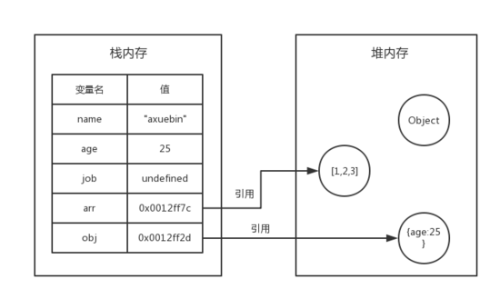
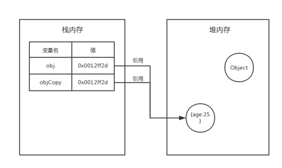
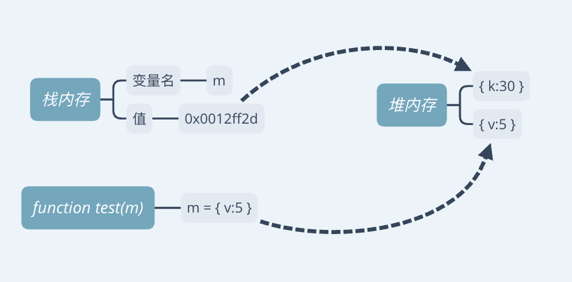

基本数据结构
栈：栈，只允许在一段进行插入或者删除操作的线性表，是一种先进后出的数据结构。
堆：堆是基于散列算法的数据结构。
队列：队列是一种先进先出（FIFO）的数据结构。
JavaScript中数据类型的存储
JavaScript中将数据类型分为基本数据类型和引用数据类型，它们其中有一个区别就是存储的位置不同。
- 基本数据类型
我们都知道JavaScript中的基本数据类型有：
String
Number
Boolean
Undefined
Null
Symbol（暂时不管）
基本数据类型都是一些简单的数据段，它们是存储在栈内存中。
- 引用数据类型
JavaScript中的引用数据类型有：
Array
Object
引用数据类型是保存在堆内存中的，然后再栈内存中保存一个对堆内存中实际对象的引用。所以，JavaScript中对引用数据类型的操作都是操作对象的引用而不是实际的对象。
可以理解为，栈内存中保存了一个地址，这个地址和堆内存中的实际值是相关的。

复制
- 基本数据类型
对于基本数据类型，如果进行复制，系统会自动为新的变量在栈内存中分配一个新值，很容易理解。
- 引用数据类型
如果对于数组、对象这样的引用数据类型而言，复制的时候就会有所区别了：
系统也会自动为新的变量在栈内存中分配一个值，但这个值仅仅是一个地址。也就是说，复制出来的变量和原有的变量具有相同的地址值，指向堆内存中的同一个对象。

- 为什么基础数据类型存在栈中，而引用数据类型存在堆中呢？
- 堆比栈大，栈比对速度快。
- 基础数据类型比较稳定，而且相对来说占用的内存小。
- 引用数据类型大小是动态的，而且是无限的。
- 堆内存是无序存储，可以根据引用直接获取。
- 例题
1 | function test (m) { |
- 分析图：
